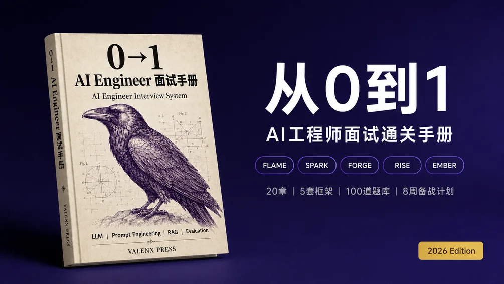

练完一遍了？ 用英文写下回答，粘贴到免费自查工具打分（工具按英文要点评分）
- 01初级什么是 RAG（检索增强生成）？What is RAG (retrieval-augmented generation)?
- 02初级讲一讲 Transformer 架构Explain the transformer architecture
- 03中级什么是 KV cache，它为什么对推理很重要？What is the KV cache and why does it matter for inference?

中文手册 · 2026 版如何从0到1准备AI Engineer面试
20 章、5 套答题框架（FLAME、SPARK、FORGE、RISE、EMBER）、100 道题库和 8 周备考计划。
- 出版Valenx Press
- 格式Gumroad 电子版下载
- 价格$9.99
更想读英文版？The 0→1 AI Engineer Interview Playbook，$19.99，Gumroad 英文版。也可以先免费领取 Top 30 题 PDF（英文）。
- 04中级LLM 为什么会产生幻觉，怎样减少？Why do LLMs hallucinate, and how do you reduce it?
- 05高级什么是 prompt injection（提示词注入），怎么防御？What is prompt injection and how do you defend against it?
- 06中级讲一讲 LoRA 和 QLoRAExplain LoRA and QLoRA
- 07中级RAG 和 fine-tuning（微调）分别在什么时候用？RAG vs fine-tuning: when should you use each?
- 08中级你怎样评估一个 LLM？How do you evaluate an LLM?
- 09高级你怎样评估一个 RAG 系统？How do you evaluate a RAG system?
- 10初级什么是 AI agent（智能体），它和 chain 有什么区别？What is an AI agent, and how is it different from a chain?
- 11中级预训练、指令微调和 RLHF 有什么区别？What is the difference between pre-training, instruction tuning and RLHF?
- 12高级什么是 LLM scaling laws（缩放定律），它如何影响决策？What are LLM scaling laws and how do they change decisions?
- 13初级LLM 中的 tokenization（分词）是什么，为什么重要？What is tokenization in LLMs and why does it matter?
- 14初级什么是 context window（上下文窗口），它如何影响系统设计？What is a context window and how does it affect system design?
- 15初级LLM 中的 temperature 和 top-p 分别起什么作用？What do temperature and top-p do in an LLM?
- 16中级什么是 LLM 量化（quantization），它为什么对部署很重要？What is LLM quantization and why does it matter for deployment?
- 17高级什么是 Mixture of Experts（MoE，混合专家模型），有哪些取舍？What is Mixture of Experts (MoE) and what are its trade-offs?
- 18中级推理模型（reasoning model）和普通对话模型有什么不同？How do reasoning models differ from standard chat models?
- 19初级embedding 模型和生成式模型有什么区别？What is the difference between an embedding model and a generative model?
- 20中级什么是 chain-of-thought prompting（思维链提示），什么时候有用？What is chain-of-thought prompting and when does it help?
免费工具
English version: AI engineer interview question deep dives
中文手册想要完整的中文备考方法？
《如何从0到1准备AI Engineer面试》：20 章、5 套答题框架（FLAME、SPARK、FORGE、RISE、EMBER）、100 道题库和 8 周备考计划。
获取中文手册更想读英文版？The 0→1 AI Engineer Interview Playbook，$19.99，Gumroad 英文版。也可以先免费领取 Top 30 题 PDF（英文）。